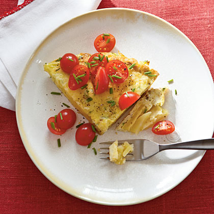
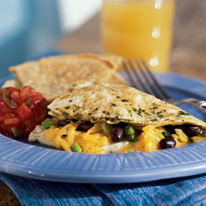
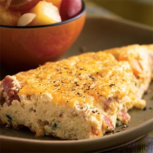
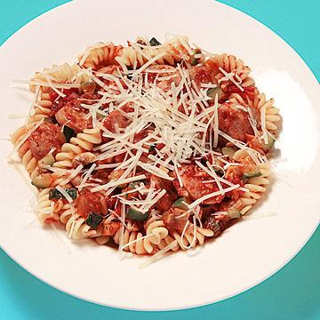
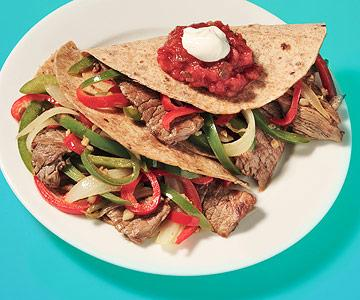
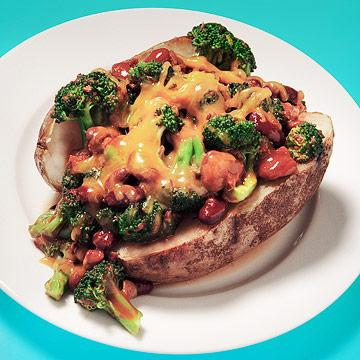

Breakfast Tortilla

In Spain, a tortilla is a thin omelet made with potatoes, and served either warm or at room temperature.
In this recipe, thin slices of potato are pressed into a pan to make a "crust" that holds the egg mixture, cheese, and tomatoes.
You can substitute pecorino Romano cheese for Manchego.
Yields: 4 servings (serving size: 1 wedge and 2 tablespoons tomatoes)
Ingredients:
- 1/2 pound Yukon gold potato (about 1 medium)
- 1 tablespoon minced fresh chives, divided
- 3/4 teaspoon salt, divided
- 1/2 teaspoon freshly ground black pepper
- 4 large eggs
- 1 large egg white
- 1 tablespoon olive oil
- 1 garlic clove, minced
- 3 tablespoons finely grated Manchego cheese
- 1 teaspoon extra-virgin olive oil
- 1/2 cup halved grape or cherry tomatoes
Preparation
- Preheat oven to 350°.
- Place potato in a saucepan; cover with water. Bring to a boil. Reduce heat, and simmer 20 minutes or until tender; drain. Cool. Peel potato; thinly slice.
- Combine 2 teaspoons chives, 1/4 teaspoon salt, pepper, eggs, and egg white in a bowl; stir with a whisk until blended.
- Heat 1 tablespoon oil in an 8-inch ovenproof nonstick skillet over medium heat. Add garlic and potato slices; cook 30 seconds, gently turning potato to coat with oil.
Sprinkle with remaining 1/2 teaspoon salt. Press potato mixture with a spatula into a solid layer in bottom of pan. Pour egg mixture over potato mixture; cook 1 minute.
Gently stir egg and potato mixture. Press potato back down in bottom of pan; cook 2 minutes. Remove from heat. Sprinkle with cheese.
- Bake at 350° for 7 minutes or until center is set. Remove from oven. Drizzle with 1 teaspoon extra-virgin olive oil. Loosen sides of tortilla from pan; gently slide onto a serving platter.
Top with tomatoes and remaining 1 teaspoon chives.
SouthWestern Omelette

Southwestern Omelet:
Black beans and cheddar make for a southwestern-inspired hearty omelet filling, but feel free to vary this recipe by using kidney beans or Monterey Jack cheese instead.
Yields two servings.
Yields: 4 servings (serving size: 1 wedge and 2 tablespoons tomatoes)
Ingredients:
- 2 tablespoons chopped fresh cilantro
- 1/4 teaspoon salt
- 4 large egg whites
- 1 large egg
- 1/2 cup canned black beans, rinsed and drained
- 1/4 cup chopped green onions
- 1/4 cup (1 ounce) reduced-fat shredded cheddar cheese
- 1/4 cup bottled salsa
- Cooking spray
Preparation
- Combine first 4 ingredients in a medium bowl, stirring with a whisk. Combine beans, onions, cheese, and salsa in a medium bowl.
- Heat a medium nonstick skillet coated with cooking spray over medium heat. Pour egg mixture into pan; let egg mixture set slightly.
- Tilt pan and carefully lift edges of omelet with a spatula; allow uncooked portion to flow underneath cooked portion.
- Cook 3 minutes; flip omelet. Spoon bean mixture onto half of omelet. Carefully loosen omelet with a spatula; fold in half.
- Cook 1 minute or until cheese melts. Slide omelet onto a plate; cut in half
Sunny Frittata

Sunny Frittata:
Bright orange bell pepper adds color to this egg dish, but you can use green peppers if that's what you have on hand. Both provide a healthy dose of vitamin C.
A combination of eggs, cheddar cheese, and orange bell pepper lends the frittata a cheerful hue. Substitute red or green bell pepper, if you prefer.
Stir the egg mixture while it cooks for the first two minutes to keep it from browning too much.
Total time: 45 minutes.
Yield: 4 servings (serving size: 1 wedge)
Ingredients:
- 2 cups egg substitute
- 1/2 cup fat-free milk
- 1/4 teaspoon salt
- 1/4 teaspoon black pepper
- Cooking spray
- 2/3 cup (4 ounces) diced ham
- 1/2 cup diced orange bell pepper
- 1/2 cup thinly sliced green onions
- 1/4 cup (1 ounce) reduced-fat shredded cheddar cheese
Preparation
- Preheat oven to 375°.
- Combine first 4 ingredients in a small bowl, stirring well with a whisk.
- Heat a medium nonstick skillet over medium-high heat. Coat pan with cooking spray. Add ham, bell pepper, and onions; sauté 2 minutes. Stir in egg mixture.
- Reduce heat to medium, and cook 5 minutes, stirring occasionally for first 2 minutes. Top mixture with cheese.
- Wrap handle of pan with foil; bake at 375° for 12 minutes or until center is set. Cut frittata into 4 wedges.
Italian Sausage and Veggie Pasta

Ingredients:
- 2 ounces uncooked whole wheat pasta
- 1/2 cup spaghetti sauce
- 1 precooked Italian-style chicken sausage, sliced into rounds
- 2 garlic cloves, minced
- 1/2 cup chopped mushrooms
- 1/2 cup chopped onions
- 1/2 cup chopped zucchini
- 2 tablespoons grated Parmesan cheese
Preparation
- Cook pasta according to package directions.
- Heat spaghetti sauce, sausage, garlic, and vegetables for about 12 minutes, until veggies are tender.
- Top pasta with sauce mixture and sprinkle with cheese.
Steak and Pepper Tacos

Ingredients:
- 1 tablespoon olive oil
- 1 teaspoon cumin
- 1 garlic clove, minced
- 3 ounces steak strips
- 1 1/2 cups sliced green and red bell peppers
- 1/2 cup sliced onion
- 2 small (6-inch) whole-grain tortillas
- 4 tablespoons salsa
- 2 tablespoons low-fat sour cream
Preparation
- In a skillet, saute olive oil, cumin, and garlic for 1 minute.
- Add steak strips and cook about 5 minutes.
- Add pepper and onion slices and cook for another 8 minutes.
- Place mixture in tortillas and fold.
- Top with salsa and sour cream.
Stuffed Chilli and Cheese Potato

Ingredients:
- 1 medium potato
- 1/2 cup turkey or vegetarian chilli
- 2 cups frozen broccoli
- 1/4 cup shredded cheddar cheese
Preparation
- Microwave potato for about 7 minutes.
- Wrap it in foil and let sit for 5 minutes.
- In a pot, warm chilli and broccoli.
- Cut potato lengthwise, top with chili mixture, and sprinkle with cheese.
Cajun Chicken with Dirty Rice

Ingredients:
- 1 teaspoon dried Cajun seasoning
- 4 ounces chicken breast
- 2 teaspoons olive oil
- 2 garlic cloves, minced
- 1 cup chopped onion
- 1 green bell pepper, diced
- 2 tablespoons tomato paste
- Few dashes Tabasco sauce, to taste
- 3/4 cup precooked brown rice
Preparation
- Sprinkle Cajun seasoning on chicken and bake or grill.
- Add oil to skillet; saute garlic, onion, bell pepper, tomato paste, and Tabasco for 2 to 3 minutes.
- Add precooked rice and saute for 5 more minutes.
- Serve chicken on rice.